Kaç Kitap Okumuş Olur?

Bir yarış pistinde iki yarışmacı aynı anda start alıyor. İlk yarışmacı saatte 15 km hızla, ikinci yarışmacı ise saatte 20 km hızla koşuyor. İkinci yarışmacı kaç saat sonra ilk yarışmacıyı yakalar?
Çözüm;